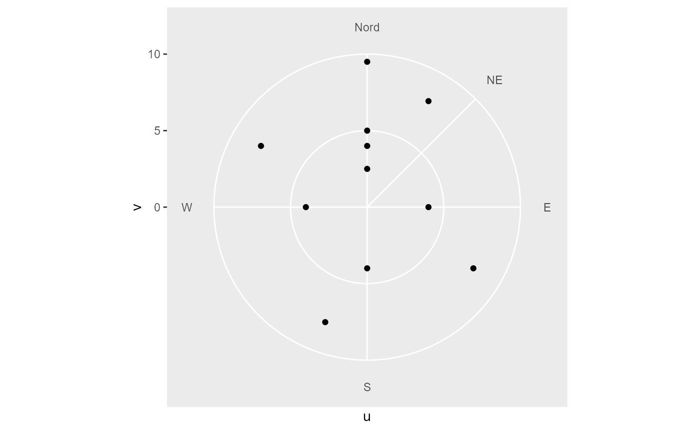
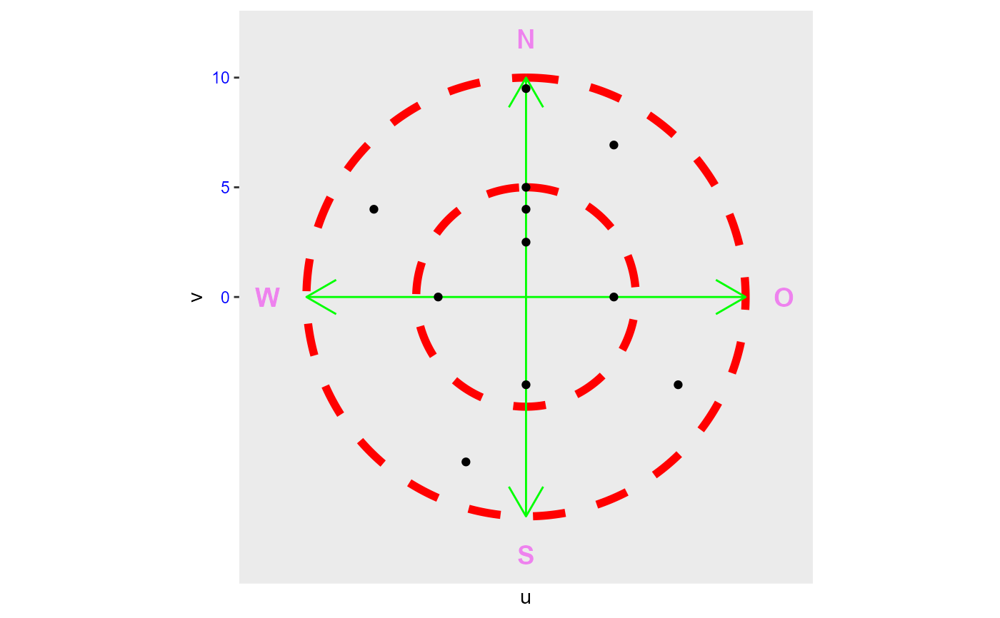
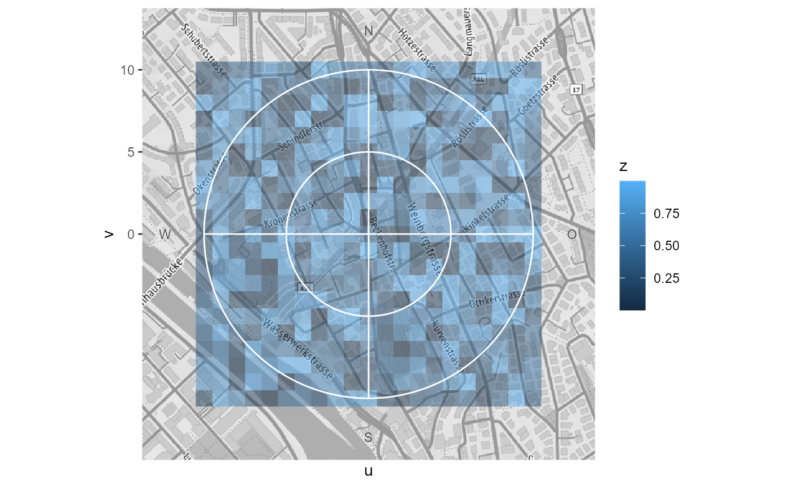

A cartesian coordinate system overlayed with a polar grid.
It is used together with summary_wind_2d() in ggpolarplot().
coord_cartpolar(limit = NA, expand = TRUE, clip = "on", bg = NULL, grid = c("background", "foreground"))
Arguments
| limit | limit for coordsystem (xlim(-limit, limit), ylim(-limit, limit)) |
|---|---|
| expand | if |
| clip | clip panel (not sure if used) |
| bg | raster for background image |
| grid | draw the lines and labels of the polar grid in the foreground or background |
Warning
This coordinate system bends some ggplot2 internals (eg. diverted x axis). It works for our scope, but the testing was surficial. And probably some things could easily break. Things that breaks this coord:
setting limits in x scale
Examples
library(ggplot2) df <- tibble::tribble( ~wd, ~ws, ~facet, 0, 5, 1, 0, 2.5, 1, 0, 9.5, 1, 0, 4, 1, 90, 4, 1, 180, 4, 1, 270, 4, 1, 30, 8, 2, 120, 8, 2, 200, 8, 2, 300, 8, 2 ) df <- dplyr::mutate(df, u = .data$ws * sin(2 * pi * .data$wd / 360), v = .data$ws * cos(2 * pi * .data$wd / 360) ) p <- ggplot(df, aes(x=u, y=v)) + geom_point() p + coord_cartpolar()# y scale is used for uv scaling (negative breaks are ignored) p + coord_cartpolar() + scale_y_continuous( limits = c(-10, 10), breaks = c(-5, 0, 1, 2.5, 7.5, 10), expand = c(0, 0, 0, 0) )# alternative argument limit of coord_cartpolar can be used p + coord_cartpolar(limit = 5)#> Warning: Removed 3 rows containing missing values (geom_point).# a continuous x scale is used to control the breaks and labels # for wd. Setting limits in this scale will cause problems p + coord_cartpolar() + scale_x_continuous( breaks = c(0, 45, 90, 180, 270), labels = c("Nord", "NE", "E", "S", "W") )# theming: only major grid is draw p + coord_cartpolar() + theme( "panel.grid.major.x" = element_line(color = "red", size = 2, linetyp = "dashed"), "panel.grid.major.y" = element_line(color = "green", arrow = arrow()), "axis.text.x" = element_text(color = "violet", size = 14, face = "bold"), "axis.text.y" = element_text(color = "blue") )#>#>#>#>#>#>#>#>#>#>#>#>p + coord_cartpolar(bg = bg)# if plotting a raster layer, use grid = "foreground" to draw # the polar grid over the raster. an expand of c(0, 0.5, 0, 0.5) # can be used to compensated the added 0.5 from raster raster <- expand.grid(u = -10:10, v = -10:10) raster$z <- runif(nrow(raster)) ggplot(raster, aes(x=u, y=v, fill=z)) + coord_cartpolar(bg = bg, grid = "foreground") + geom_raster(alpha = 0.5) + scale_y_continuous(expand = c(0, 0.5, 0, 0.5))# -Inf, Inf, -Inf, Inf from annotation_raster get mapped # over the complete panel ggplot(raster, aes(x=u, y=v, fill=z)) + coord_cartpolar(grid = "foreground") + annotation_raster(bg, -Inf, Inf, -Inf, Inf) + geom_raster(alpha = 0.5) + scale_y_continuous(expand = c(0, 0.5, 0, 0.5))